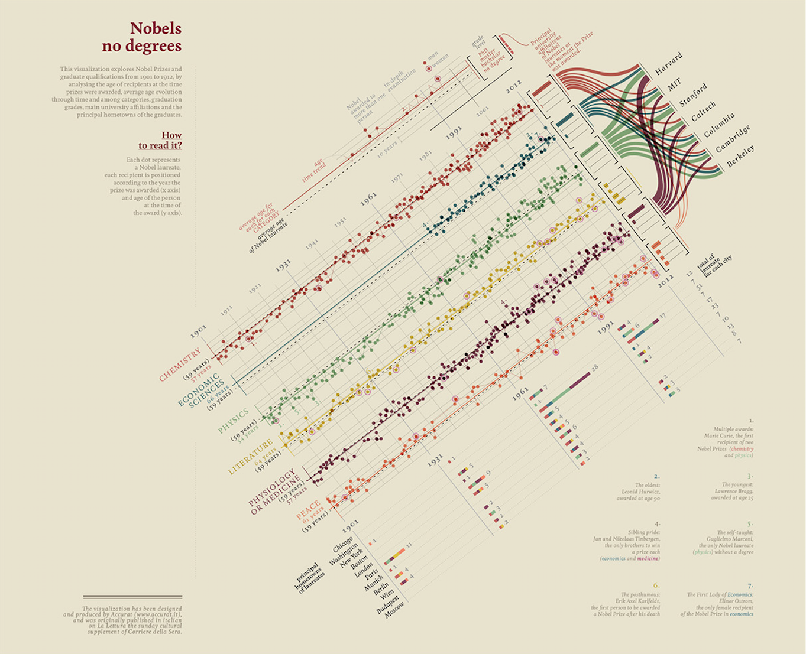

Approximating the components of Lupi’s Nobel no degrees
Exemplary, award-winning information graphic
Giorgia Lupi is a master at designing information for visual narrative — telling stories through visualization. Her portfolio includes a series of exploratory data visualizations published for the largest circulating Italian newspaper, La Lettura. She thinks hard about her audience, does not underestimate them. Her work gently guides those less familiar with information graphics, while organizing data complexity for a deep reader experience.
Let’s consider one of her works, Nobels no degrees,

Lupi has used this as one of her reference works, explaining how she arrived at a final design (Lupi 2016). From her designer’s eye. Conception should be the most difficult part of designing an information display such as this. I do not add to her wonderful help in this regard. Instead, I consider two concepts important to design efforts — the concepts of layering and components — as an exercise identifying and coding approximations of the major components of her example.
Approximating the reference in R
Although I am not aware of the tools Lupi used for creating this information graphic; perhaps it was coded in D3.js. Perhaps Adobe Illustrator carried some of the responsibility. But today the particular tools are less important as each are converging into common functionality (Meeks 2018b).
A prominent instructor for D3, Elijah Meeks, recently responded to Edward Tufte, who suggested that R “coders and users just can’t do words on graphics and typography” and that “publication-quality work requires: R + Adobe Illustrator + reasoning about words on graphics + respect for audience” (Meeks 2018a). Meeks responded that we “can design a good chart with R”, but questioned whether “R users invest in design”. He considered a survey that suggests R-centric users for graphics are less likely to focus on design. As design is important in communication, we consider the design of Lupi’s example in the context of R.
An exercise in design using R
Let’s think about the components of Lupi’s Nobels no degrees. We will ignore for now the counter clockwise rotation of its central display. A careful review of the central display suggests four main data display components: a main display containing points and lines; below that, a series of stacked bar charts; to the right of the main display, histograms (or bar charts that add to 100 percent); and to the right of the histograms, a Sankey diagram. These are the most complex data components. And they are linked together into a cohesive whole through purposeful choice of color and positioning such that visual encodings are shared. So let’s approximate each of these components using R.
Data for Lupi’s display
As Lupi’s information graphic studies Nobel winners and their backgrounds, the underlying data is, fortunately, available publicly by the prize-awarding organization and elsewhere. We find most of the data Lupi uses published by the Nobel committee. Other, supplementary information, such as each winner’s level of formal education, is also available accessible from sources like Wikipedia. We will use these for our approximation.
d <- read.csv("winners.csv", stringsAsFactors = F, encoding = "UTF-8")Now the data was not created and stored for our purposes, so we will need to clean and transform — basic housekeeping.
# create array identifying each Nobel prize type
cats <- c("Chemistry", "Economics", "Literature",
"Medicine", "Peace", "Physics")
# load library
library(dplyr)
# clean the data types and calculate winner ages from birth and year of prize
d <- d %>%
mutate(Category = factor(Category,
levels = cats,
ordered = T)) %>%
mutate(Sex = factor(Sex)) %>%
mutate(Birth.Year = as.integer(substring(Birth.Date, 1, 4))) %>%
mutate(Age = Year - Birth.Year)
# aggregaate overall average age of winners
davg <- d %>%
group_by(Category) %>%
summarise(avg_age = mean(Age, na.rm = T)) %>%
ungroup()Since Lupi uses color to link these component displays together, I’ve copied the hexadecimal values of the main six colors from her original:
cols <- c("#cc5b47", "#488595", "#96c17c",
"#decd7c", "#924855", "#e79275")Let’s visually inspect the colors of each hex value:
library(ggplot2); library(ggthemes)
ggplot() +
geom_point(aes(x = 1:6, y = 0),
shape = 21, size = 5, fill = cols, color = cols) +
theme_void()
Main display of points and lines
We begin by approximating the main, central data display. Lupi explains that the display identifies the year of the prize on the x axis, the winners’ ages on the y axis. She represents each prize by a circle or point spatially along the x-y coordinates, and represents change in age year-over-year as a line connecting the years. Also notice that there is one chart or panel per prize category. We can easily separate charts by panel or facet. And each color represents a category. Lupi also distinguishes sex for each prize, representing females by circling the prize in the color pink. Finally, we notice that she includes the average age of all winners with a dashed, black line. And she encodes the average age of each category with a solid horizontal line colored for that category. So let’s code these ideas using the ggplot2 package in R:
p1 <- ggplot(d, aes(color = Category)) +
theme_minimal(base_family = "sans", base_size = 8) +
geom_hline(yintercept = mean(d$Age, na.rm = T),
lwd = .2, color = "black", linetype = "dashed") +
geom_hline(data=davg, mapping = aes(yintercept=(avg_age),color = Category)) +
geom_line(aes(Year, Age, color = Category), lwd = .2) +
geom_point(aes(Year, Age, color = Category), size = 1.5, alpha = .5) +
geom_point(data = filter(d, Sex == "Female"),
aes(Year, Age),
color = "#da87bd", shape = 21, size = 4) +
facet_wrap(Category ~ ., nrow=6, strip.position="left") +
scale_color_manual(values = cols) +
scale_x_continuous(breaks = c(1901, 1931, 1961, 1991, 2016),
minor_breaks = seq(1911, 2016, by = 10),
position = "top") +
theme(legend.position = "") +
labs(y = "", x = "")Here’s our first display, stored in the object p1:

While the display can be made to look a bit closer to Lupi’s original component, it approximates Lupi’s concept well enough for this exercise.
Per-category histograms or bar charts
Next, let’s approximate the bar charts or histograms to the right of the above main data display. The bars represent the relative percentage of each level of formal education each winner in that category obtained. This information is available on wikipedia, but for now, I just estimated the values based on Lupi’s original chart. Here are the placeholder data:
dedu <- read.table(text = "
Category Doctor Master Bachelor None
Chemistry 98 1 1 0
Economics 95 1 4 0
Literature 20 20 25 35
Medicine 95 4 1 0
Peace 32 25 20 23
Physics 99.1 .3 .3 .3
", header = T)We used read.table just for convenience of manual entry of the data into wide format. Now let’s reshape the data into long format, and code two variables, Category and Education, as ordered factors so that the ordering can be used on the data display:
# changes the data from wide form, above, to long format
# where each degree is identified in the variable Education
dedu <- reshape2::melt(dedu,
variable.name = "Education",
value.name = "Percent")
# transform charater types to ordered factors
dedu <- dedu %>%
mutate(Category = factor(Category,
levels = cats,
ordered = T),
Education = factor(Education,
levels = c("None", "Bachelor",
"Master", "Doctor"),
ordered = T))Next, we plot the information:
p2 <-
ggplot(dedu) +
facet_wrap(~Category, ncol = 1) +
geom_bar(aes(Education, Percent, fill = Category), stat = "identity") +
coord_flip() +
scale_fill_manual(values = cols) +
theme_minimal(base_family = "sans", base_size = 8) +
theme(legend.position = "",
panel.grid.major.x = element_blank(),
panel.grid.minor.x = element_blank(),
axis.text.x = element_blank(),
axis.title = element_blank())Here’s our series or facets of stacked bars:

As before, we can get closer to the original, but this approximation gets the idea about how to shape and code the data close enough for now.
Per-era stacked bar charts
Next, let’s approximate the series or facets of stacked bar charts. A careful review shows that the bars represent the number of prizes awarded for winners born in specific cities, grouped by era. The color within each bar, as before, corresponds to the prize category. Before plotting, we need to aggregate the data by era and filter the data to the specific cities:
cities <- c("Chicago, IL", "Washington, DC", "New York, NY",
"Boston, MA", "London", "Paris", "Munich",
"Berlin", "Vienna", "Budapest", "Moscow")
# aggregate totals by era, birth city, and category of prize
d3 <- d %>%
filter(Birth.City %in% cities) %>%
mutate(Birth.City = factor(Birth.City,
levels = cities[11:1], ordered = T)) %>%
mutate(era = case_when(Year < 1931 ~ 1901,
Year < 1961 ~ 1931,
Year < 1991 ~ 1961,
TRUE ~ 1991)) %>%
group_by(era, Birth.City, Category) %>%
summarise(n = n()) %>%
ungroup()
# aggregate totals by era and birth city
d4 <- d3 %>%
group_by(era, Birth.City) %>%
summarise(Total = sum(n)) %>%
ungroup()Let’s code a display for the aggregate data:
p3 <- ggplot(d3) +
facet_wrap(era~., nrow = 1) +
geom_bar(aes(Birth.City, n, fill = Category),
stat = 'identity', width = 0.2) +
geom_text(data = d4,
mapping = aes(Birth.City, Total + 2, label = Total),
size = 2.5) +
coord_flip() +
scale_fill_manual(values = cols) +
theme_minimal(base_family = "sans") +
theme(legend.position = "",
panel.grid.major.x = element_blank(),
panel.grid.minor.x = element_blank(),
axis.text.x = element_blank(),
axis.title = element_blank())As before, this approximation should be close enough for teaching purposes:

Sankey diagram
The last major data display component is perhaps less familiar. It’s called a Sankey diagram, made famous by Edward Tufte’s analysis and English translation of perhaps “the best graphic ever produced”, Minard’s Napoleon’s Invasion of Russia (Tufte 2001, 40–41, 176–77). A Sankey diagram is a specific type of flow diagram where the width of the arrows represent the relative, quantitative proportion of each category. We can also find information on this type of visual display by reviewing literature of one of Sankey’s specific implementations, an alluvial1 diagram.
To make the Sankey diagram, we start by preparing the data. We identify the specific universities (the original variable is Organization.Name), and filter the data to those universities. Here are the universities:
universities <- c("Harvard", "MIT", "Stanford", "Caltech",
"Columbia", "Cambridge", "Berkeley")Now, the data cleaning is a bit ugly, mostly because the names of the companies and universities are global and, as such, some include characters outside the normal UTF-8 standard:
d5 <- d %>%
mutate(Organization.Name =
ifelse(grepl("Berkeley", Organization.City, perl = T),
"Berkeley", Organization.Name)) %>%
mutate(University = NA) %>%
mutate(University =
ifelse(grepl("Harvard", Organization.Name, perl = T, useBytes = T),
"Harvard", University)) %>%
mutate(University =
ifelse(grepl("MIT", Organization.Name, perl = T, useBytes = T),
"MIT", University)) %>%
mutate(University =
ifelse(grepl("Stanford", Organization.Name, perl = T, useBytes = T),
"Stanford", University)) %>%
mutate(University =
ifelse(grepl("Caltech", Organization.Name, perl = T, useBytes = T),
"Caltech", University)) %>%
mutate(University =
ifelse(grepl("Columbia", Organization.Name, perl = T, useBytes = T),
"Columbia", University)) %>%
mutate(University =
ifelse(grepl("Cambridge", Organization.Name, perl = T, useBytes = T),
"Cambridge", University)) %>%
mutate(University =
ifelse(grepl("Berkeley", Organization.Name, perl = T, useBytes = T),
"Berkeley", University))The data is an aggregate of prizes for each university per category, so we code that calculation next:
d5 <- d5 %>%
filter(University %in% universities) %>%
group_by(Category, University, .drop = F) %>%
summarise(n = n())Several R packages are available to create a Sankey diagram. We will introduce ggforce because it has other uses too. This ggplot-friendly package includes the ability to code Sankey diagrams as a specific form of another diagram we will not discuss, the parallel-coordinate plot. But we will need to transform the data just slightly so that it converts our tidy format to something more natural for a Sankey representation (and the interested reader can review its help files for more details). Note also, in Lupi’s original that no prizes were awarded to winners at the universities of interest for the category of literature. The code below drops unused categories by default, so we hacked a little to add keep the category (see above, .drop = F) and include dummy data as a placeholder:
# setup data for plot
library(ggforce)
# use helper function to change tidy data into new format
data <- gather_set_data(d5, 1:2)
# Note a slight hack: to add litrature back in (there are zero
# literature prize winners at schools of interest
data <- data %>%
mutate(University = ifelse(Category == "Literature", "Harvard", University)) %>%
mutate(y = ifelse(Category == "Literature" & x == "University", "Harvard", y)) %>%
mutate(y = ifelse(Category == "Literature" & x == "Category", "Literature", y))Here’s one way to code the visual display:
p4 <- ggplot(data, aes(x, id=id, split = y, value = n)) +
geom_parallel_sets(aes(fill = Category),
alpha = 0.6, axis.width = 0.05, sep = .1) +
geom_parallel_sets_axes(axis.width = 0.01, fill = "gray80", sep = .1) +
geom_parallel_sets_labels(size = 2, angle = 0,
position = position_nudge(x = c(rep(-.1, 6), rep(.1, 7)) ),
sep = .1) +
scale_fill_manual(values = cols) +
theme_void() +
theme(legend.position = "")which results in,

Next steps
With these above four data display approximations, the hard coding is perhaps finished. The next steps are to organize the four displays together as in Lupi’s original. R’s underlying grid system, accessible through various packages and described thoroughly in (Murrell 2018), enables precise placement place of each component relative to the others. And that approach is probably best when ensuring the result is reproducible by others. But it is a little more involved than simply saving these components as vector graphic files and organizing them with software specifically designed for vector graphics and page layout (e.g., Adobe Illustrator or In Design, or the freely available software Inkscape, or even software for presentations).
Consider how Lupi interweaves the components.
Lupi’s genius lay in the original ideas for encoding the information in a way that enables the audience to have a seamless experience. She does that in part by use of color, and by placing the components where not just colors, but other encodings — axes too, for example — are shared across components.
More specifically, the facets of the stacked bars share date information with the x axis of the main graphic; the histograms are faceted categorically, and aligned with, each of the faceted main display; and the Sankey diagram aligns its left categories with both the histograms and main body. Finally, in her annotations, she applies the same categorical color encodings to words that refer back to the data displays.
Lupi’s annotations are as easy to include as they are important. And that places what should be the hard part — conceiving the original idea — where it belongs.
I hope that this exercise in approximating the main data displays of Lupi’s award-winning information graphic — Nobels no degrees — has been helpful in thinking about the construction and design of seemingly more complicated information displays. By thinking about the complex presentation in its separable components and layers, we find that the whole can be more straight forward, less intimidating, to build.
References
Lupi, Giorgia. 2016. “Visual Data - La Lettura.” http://giorgialupi.com/lalettura.
Meeks, Elijah. 2018a. “You Can Design a Good Chart with R: But do R users invest in design?” https://towardsdatascience.com/you-can-design-a-good-chart-with-r-5d00ed7dd18e.
———. 2018b. “3rd Wave Data Visualization: understanding the convergence of tools, audiences and modes.” https://towardsdatascience.com/3rd-wave-data-visualization-824c5dc84967.
Murrell, Paul. 2018. R Graphics. Third. CRC Press.
Tufte, Edward R. 2001. The Visual Display of Quantitative Information. Second. Graphics Press.
Derived from alluvium, which means “a deposit of earth, sand, and other transported matter left by water flowing over land not permanently submerged, esp. in a river valley or a delta.” “alluvium, n.” OED Online, Oxford University Press, March 2019, www.oed.com/view/Entry/5532. Accessed 15 March 2019.↩
RData visualizationDesignInformation Graphics
20cc03f @ 2020-03-30